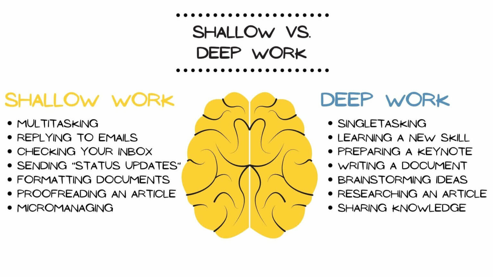

05
Deep Work: Staying Focused in a Distracted World
Set your determination to do some really deep work. This will completely rid distractions of their key and unlock your potential completely. Join me as I check out ways to inspire focus and remove distractions so that you can produce worthy results.
What is Deep Work?
Deep work is the ability to focus without distraction on a difficult task.
This was defined in Cal Newport's book, Deep Work, as:
- Focused Effort: Working on tasks that demand your undivided attention.
- High-Quality Results: Meaningful and high-impact work.
- Distraction-Free Environment: To create an conditions suitable for concentration.
- Flow State: To have that state of deep immersion into which productivity has great peaks.
Why Deep Work Matters
Deep Work is "the most crucial aspect in being able to arrive at the more meaningful results that the world has to offer us on the very distraction." Here are the reasons why it matters most:
- Improved Productivity: Deep work allows you to achieve more in less time.
- Better Quality: Better results come from focused work.
- Skill Development: Complex skills can be mastered in shorter periods and at a faster rate.
- Reduced Stress: One task at a time leads to less mental fatigue.
- Career Advancement: Standing out from the crowd with exceptional results.
- Increased Creativity: Your head will be very much in the problems thus inspiring novel thinking through deep work.
How to Cultivate Deep Work
Some practical techniques that can help you cultivate a deep work habit:
- Schedule Deep Work: Schedule hours for intensive work, put away every other thing, and clear your mind.
- Eliminate Distractions: Notifications should be turned off. Unneeded tabs should be closed. A quiet workspace should be created.
- Set Clear Goals: Goals need to be defined. Deep work sessions must have stated objectives.
- Take Breaks: Breaks are useful. One can use the Pomodoro Technique for recharged focus.
- Track Progress: Progress should be measured. A journal can hold deep work hours and accomplishments.
- Practice Mindfulness: Mindfulness should be practiced. Exercises in mindfulness can improve focus ability.
📸 Visualize Deep Work in Action

Shallow work vs Deep work
Success Stories
- Writers: Authors such as J.K. Rowling completed their masterpieces by using deep work.
- Entrepreneurs: Business leaders like Elon Musk solved hard problems by dedicating time to focus.
- Students: Deep work allows students to do well on exams and understand difficult subjects.
- Developers: Programmers make code that is error-free by using deep work. Scientists make important discoveries. They depend on deep work.
- Researchers: Scientists rely on deep work to make groundbreaking discoveries.
- Designers: Creative professionals use deep work to produce innovative designs and solutions.